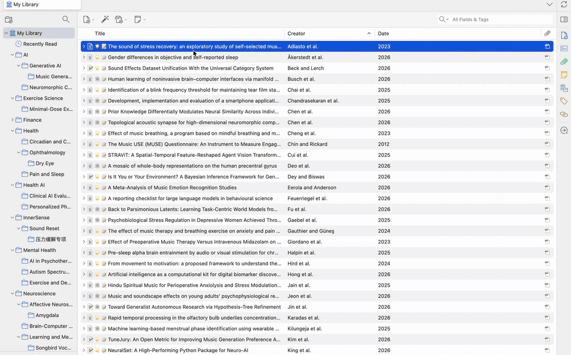

01
打开
从 PDF 阅读器工具栏或文库右键打开。Mktero 使用 MinerU 解析正文、公式、表格、图片和引用。
ZOTERO READING LAYER
Mktero 是一个面向 Zotero 的来源关联重排阅读器。阅读双栏、公式和表格密集的论文，在 Markdown 中标注，再回到原始 PDF 核对。

不是另一个 Markdown 编辑器。Mktero 让 PDF 成为事实源，让阅读、标注和摘录保持可核验。
THE READING LOOP
Mktero 把转换结果留在 Zotero 的阅读上下文里，不迫使你在 PDF、笔记和浏览器之间来回切换。
从 PDF 阅读器工具栏或文库右键打开。Mktero 使用 MinerU 解析正文、公式、表格、图片和引用。
在连续、只读的 Markdown 视图中搜索、浏览目录、预览引用和图表，并直接创建 Zotero 标注。
点击来源回到 PDF 原位，或复制带论文标题、物理页码和 Zotero 回链的摘录。
READ WITH PROOF
MinerU 的内容块与 PDF 页码、区域坐标建立关联。Mktero 只在匹配可靠时显示跳转，宁可少一个按钮，也不猜测原文位置。
MADE FOR PAPERS
把双栏布局、OCR 断行、公式和表格整理成适合连续阅读的视图。
目录、引用预览、图表引用、图片放大和 KaTeX 公式都保留在阅读上下文中。
不把 Markdown 当作新的事实源。PDF 仍是原文，Mktero 负责让它更容易读和核对。
相同 PDF 可从本机缓存打开，避免每次重新上传和解析。
KNOW WHERE YOUR PAPER GOES
首次转换或缓存未命中时，完整 PDF 会上传到 MinerU。API Token、Markdown、图片和标注缓存保存在本机 Zotero 配置文件中，未加密且不会通过 Zotero 同步。
阅读完整隐私说明START WITH ONE PAPER